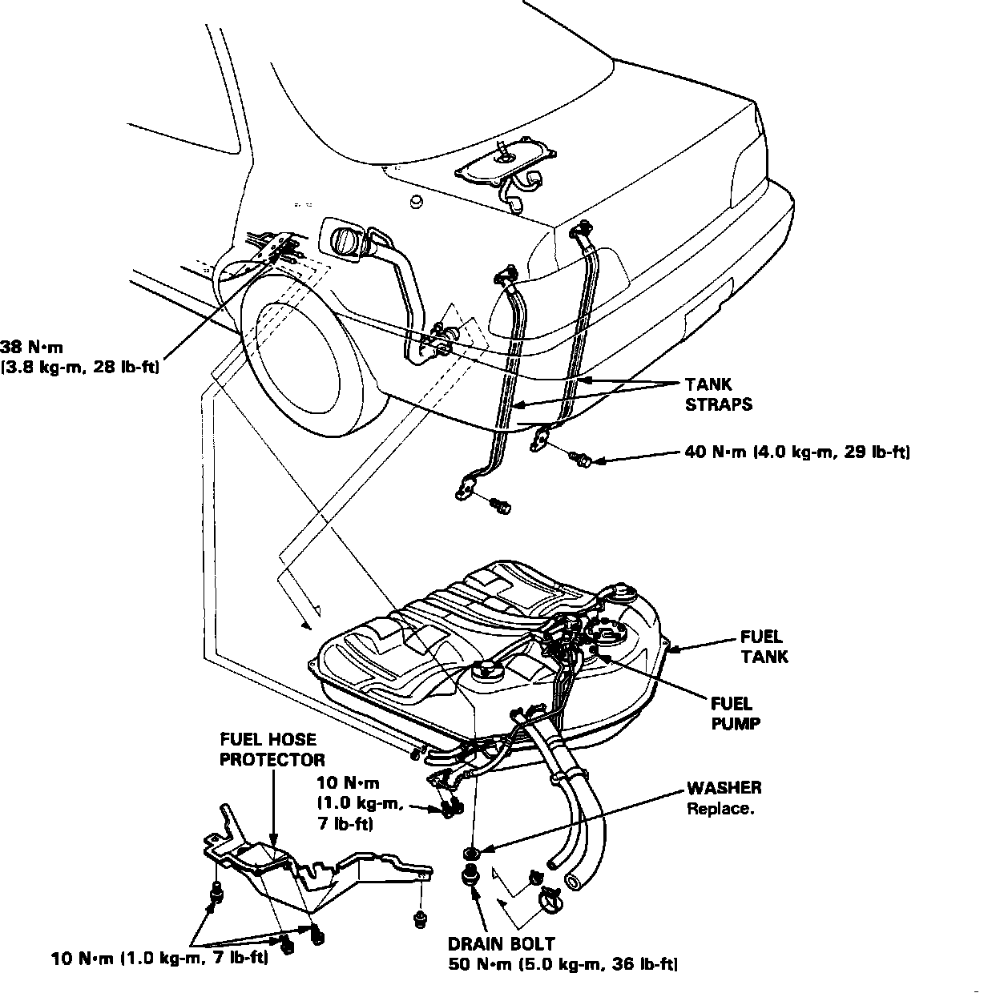

Fuel Tank: Service and Repair
CAUTION: Do NOT smoke while working on the fuel system. Keep sparks and flame away from the work area.Fuel Tank:

1. Loosen the fuel system service bolt to relieve fuel pressure.
2. Remove the gas cap.
3. Remove the drain bolt and drain fuel into an approved container.
4. Remove the maintenance access cover beneath the rear seats.
5. Remove the fuel hose protector. Remove the fuel lines and electrical connectors from the fuel pump, fuel cut-off valve, and fuel sending unit.
6. Raise the vehicle on a hoist.
7. Place a jack or other support under the fuel tank. Remove the tank strap nuts and allow the straps to hang free.
8. Remove the fuel tank.
NOTE: The tank may stick on the undercoat applied to its mount. To remove, carefully pry the tank off the mount.
9. Install a new washer on the fuel drain bolt and reinstall.
10. Re-install the fuel tank in reverse order.
11. Torque the fuel tank strap nuts to:
16 ft.lbs. (2.2 kg-m)